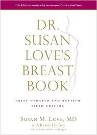
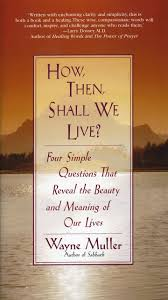

Library Resource Center
Printable handouts for you and your patients
The Cancer Support Center Library Resource Center provides information and educational resources on a variety of cancer-related topics. More than 1,300 items including books, CDs, DVD’s, periodicals and pamphlets are available. Information includes types of cancer, treatment, grief, caregiver resources, guided imagery, exercise, relaxation, children’s resources and more. Most materials may be checked out for three weeks
A public computer terminal is available for Internet searching, and staff is available to offer assistance in accessing information.
If you’re new to the cancer experience, you may want to consider the following books, which are available to check out in our Library Resource Center:
Dr. Susan Love’s Breast Book
Dr. Susan Love’s Breast Book has long been the bible for the newly diagnosed. In this completely revised fifth edition, it also becomes a guide for those at risk of getting breast cancer, survivors interested in the consequences of their treatment, and anyone who wants to understand the new research about how the local environment influences the manifestations and treatments of many different kinds of breast cancer. Major advances being made in genetic research today mean that prevention and treatment can work not only to get rid of mutated cells (through chemo or surgery), but also to change the environment around the cells (through hormone therapy, exercise, and stress reduction). Among other promising developments discussed are advances in imaging, recognition of breast density as a risk factor, and a section focused on personalized medicine; to help determine what kind of cancer you have and how best to treat it. Any woman facing a diagnosis, decisions about treatment, or concerns about prevention will find in Dr. Love’s book the information, guidance, and reassurance she needs.
Any woman facing a diagnosis, decisions about treatment, or concerns about prevention will find in Dr. Love’s book the information, guidance, and reassurance she needs.
How, Then, Shall We Live?: Four Simple Questions That Reveal the Beauty and Meaning of Our Lives
One of the hazards of a reflective life is to grope for answers before you’ve asked the right questions. Wayne Muller, a minister, therapist and bestselling author has taken a stab at asking the big questions: Who am I? What do I love? How shall I live, knowing I will die? What is my gift to the family of the Earth? Following each of these questions are some of the most tender and luminous discussions one could hope to ponder. More than a monastery for the armchair seeker, this has potential to be a mind-altering book with permanent impact.
BOOKS FOR CHILDREN WHOSE PARENT/FAMILY MEMBER HAVE CANCER:
Click on each image to direct you to amazon.com


BEREAVEMENT CHILD BOOKS: